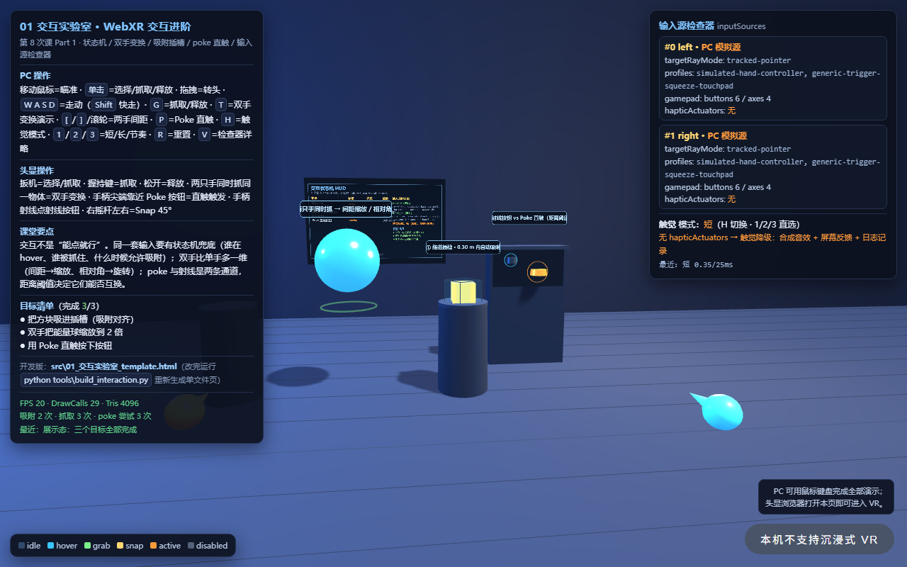
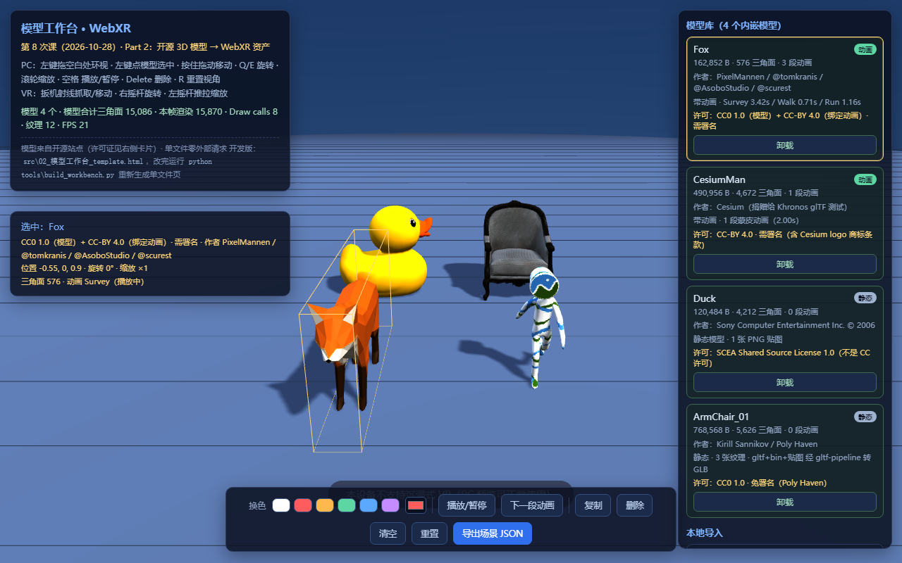
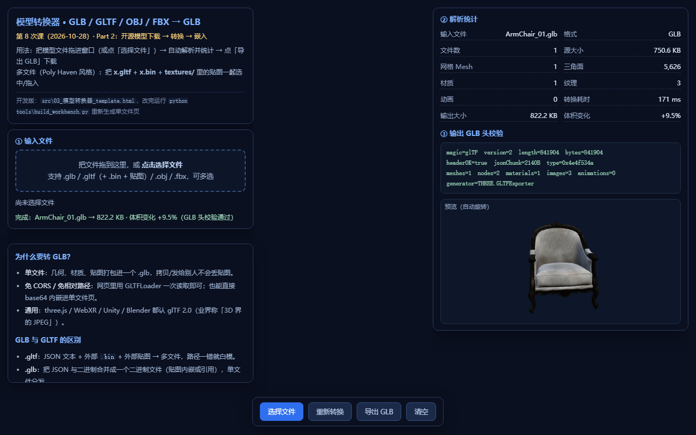

① 一处被改过的交互
在学生版 01 交互实验室里改一个参数（或加一个按钮），保存 + 刷新后能看到变化； 记录表写清“原值 → 新值 → 前后现象”。
第 8 次课 · 2026-10-28 · 4 学时 —— 前两节 90′在 646 机房自己动手（教师只开场 5′ ＋ 巡场，不讲课）：改一处交互、转一个 GLB、写一张许可卡；后两节 90′换到 430 教室，教师戴上头显把你们刚做的事拆开讲——动手在前、原理在后
同一个 180 分钟，改成两种角色：646 机房学生做（教师只巡场）／430 教室教师讲（学生看＋少量体验）
第 7 次课你们手上有一堆能做的事（9 个交互零件）。今天要做的，是把这些“零件”装成一台机器，再把“网上的模型”变成能进作品的资产。 所以这次课换了排法：前两节我不讲，你们自己动手；后两节戴上头显，我再讲你们刚才做的事到底发生了什么。
| 第 1–2 节（90′）· 646 机房 | 第 3–4 节（90′）· 430 教室 | |
|---|---|---|
| 谁在动 | 学生动手（教师只开场 5′ ＋ 巡场答疑） | 教师讲与演示（学生看，少量轮流体验） |
| 主材料 | 学生课堂作业包（三页 ＋ 离线模型 ＋ 90′ 作业单） | 01 交互实验室 / 02 模型工作台 / 03 模型转换器 / 04 头显自检页 |
| 产出 | 改过的学生版 HTML ＋ GLB ＋ 场景 JSON ＋ 许可卡 ＋ S1/S2/S3 截图 ＋ 作业单 | 观察记录（看头显演示）＋ 修正后的理解 ＋ 课后补齐 |
| 教师角色 | 发材料、每 15′ 广播一次进度、巡场、收作业 | 主讲、戴头显演示、控投屏、组织轮换 |
在学生版 01 交互实验室里改一个参数（或加一个按钮），保存 + 刷新后能看到变化； 记录表写清“原值 → 新值 → 前后现象”。
来源 → 转 GLB → 导入工作台（自动归一化）→ 3 个操作 → 导出场景 JSON。 没网就用教师离线包，照常给分。
资产名 / 作者 / 来源 URL / 许可（CC0 / CC-BY / CC-BY-NC / SCEA）/ 可商用？需署名？/ 改了什么 / 结论。 430 会被当众“判卷”。
不讲课、不演示新东西——只做三件事：开场 5′ 说清做什么 / 交什么、每 15′ 广播一次进度与常见坑、巡场答疑
| 时间 | 环节 | 学生做什么 | 教师做什么 |
|---|---|---|---|
| 0–5′ | 发作业包与说明 | 打开作业包「00_先读我」，确认三页位置、下载 / 拷贝位置 | 念清四件事：两段式安排 · 练习 1/2 各 35′ · 提交清单与命名 · 卡住先看“常见坑”再举手；强调不许改 demos 原件 |
| 5–10′ | 三页跑通热身（4 钩） | 双击 01 交互实验室 / 02 模型工作台 / 03 模型转换器各看一眼，勾 4 个钩 | 只抓“打不开”的机器：白屏 → 换 Chrome / 换机位，别的先不管 |
| 10–45′ | 练习 1 · 交互改造（35′） | 打开学生版 01 → 找「学生练习区」→ 改 2 项 A 必做 → Ctrl+S 保存 → F5 刷新 → 记录 → S1/S2 截图 → 勾 6 项 | 前 3′ 示范一次“改一个数 → 保存 → 刷新”；每 15′ 广播进度；巡场先看改的是不是学生版 |
| 45–50′ | 答疑与休息（5′） | 休息、互相看屏幕、补齐截图 | 只答“三个人以上问的”，其余留到巡场；典型错误记下来（430 开场就用它） |
| 50–85′ | 练习 2 · 模型管线（35′） | 选来源（无网用离线包）→ 转 GLB → 导入工作台 → 3 个操作 → 导出场景 JSON → 写许可卡 → 勾 6 项 | 广播“许可当场记，别靠记忆”；巡场查三件事：来源 URL 填没填 / 许可栏写没写 / 有没有把 NC 模型放进作品 |
| 85–90′ | 提交与自检 | 按命名规范把文件放进 学号_姓名_第8次课，按作业单 §五逐项打钩 | 按机位收文件、清点数量、记下未交名单 |
F12 → Console，没有红色报错。看到红字先抄下来，别自己猜。练习 1 改交互（直接改单文件 HTML 末尾「学生练习区」→ 保存 → 刷新）；练习 2 走完模型管线（没网用离线包）
demos\ 原件（改坏重新拷一份，不扣分）；② Ctrl+S 保存 → 浏览器 Ctrl+F5 刷新，没刷新 = 白改（第一大坑）；③ 每个勾都要能当场演示，勾了不算数，被抽查要 30 秒内点出来。打开 pages\01_交互实验室_学生版.html，Ctrl+F 搜「学生练习区」——就在参数旁边。改完 Ctrl+S → F5，想看生效没有：F12 → Console → 输入 __lab.limits()。
| 编号 | 改什么 | 默认值 → 试什么 | 要观察的现象 |
|---|---|---|---|
| A1 | 吸附判定半径 SNAP_DIST | 0.30 m → 0.12（几乎吸不上）/ 0.60（隔空就吸上） | 吸附成功率、误吸附、控制感；改完 __lab.limits().snapDist 要跟着变 |
| A2 | 新增一个 poke 按钮 | 照 makePokeButton(...) 复制一行改位置 | 新按钮能直触触发，HUD 状态与触觉模式有变化 |
| B1 | 触觉强度 HAPTIC 表 | short 0.35 → 0.8 | “同一强度用到底 = 噪音”；PC 端走音效 + 日志降级 |
| C1 | 状态机 TRANS 转移表 | 删掉 idle → grab 出口 | 哪些操作先被拒绝；被拒记录在 S.lastReject |
一句话任务：下一个模型 → 转成 GLB → 导入工作台 → 3 个操作 → 导出场景 JSON ＋ 写一张许可卡。五件产出缺一扣分：
| # | 产出 | 怎么算合格 |
|---|---|---|
| ① | 转换后的 .glb | 能被 02 工作台导入成功；文件大小不是 0 |
| ② | 下载 / 离线记录表 | 来源站点、URL、作者、许可四项都填了（离线包写“教师离线包”） |
| ③ | 场景 JSON | 02 里「导出场景 JSON」得到，打开后 pos / rot / scale / color / anim / triangles / license 都有值 |
| ④ | 三个操作 | 移动 / 旋转 / 缩放 / 换色 / 播动画里做 3 个，并记下参数 |
| ⑤ | 许可卡 | 作者、来源、许可、可商用、需署名、改了什么、结论——不许空着，不确定写“待核实” |
.bin / 纹理，必须多文件一起拖；② 导入后模型巨大或看不见 → 正常，工作台会归一化到 1.2 m，先加载再摆；③ 许可卡写“网上找的” → 等于没写，要写站点＋URL。开场就接你们刚做的三件事 → 交互原理深化 → 头显演示 1（01 交互实验室） → 休息轮换 → 模型管线与许可点评 → 头显演示 2（02 模型工作台） → 收束
| 时间 | 环节 | 讲什么 / 演什么 | 学生做什么 |
|---|---|---|---|
| 0–10′ | 收作业 ＋ 开场 | 开场三句话：“你改的那一处，其实是在改状态机” / “你转的 GLB 还缺一步归一化” / “你写的许可卡决定模型能不能进作品” | 交作业单；拿观察卡（每人一张） |
| 10–30′ | 交互原理深化 | 输入源三字段 → select vs squeeze → 状态机 → 双手变换数学 → 双阈值吸附（用你们 646 的真实错误当例子） | 听讲、回答、在观察卡记关键词 |
| 30–45′ | 头显演示 1：01 交互实验室 | 戴前先做 04 头显自检页 30 秒自检 → 投屏 → 戴入 → 演 5 步：输入源检查器 / 射线悬停→选择 / 单手抓取 / 双手变换 / 吸附＋poke | 看投屏；戴头显的人做 3 件事（抓一次 / 缩一次 / 戳一次），其余人填观察卡 |
| 45–55′ | 休息与设备轮换 | 头显消毒 / 换人 / 充电；教师把演示页切到 03、02 备用 | 轮流戴（每人 60–90 秒）；没戴的补观察卡 |
| 55–75′ | 模型管线与许可点评 | 为什么 GLB → 转换≠优化（Duck +26.5%）→ 许可陷阱（CC-BY-NC）→ 归一化 → 当众判 2 张学生许可卡（投票“能过吗”） | 对照自己的许可卡改错 |
| 75–85′ | 头显演示 2：02 模型工作台 | 自检 → 投屏 → 戴入：加载 4 个内嵌模型（看许可角标）→ 归一化 → 拖 / 旋 / 缩 / 换色 / 播动画 → 本地导入 → 导出场景 JSON | 戴头显的人试着导入一个模型；其余人看投屏 |
| 85–90′ | 收束 | 三句话：零件要装成系统 / 模型要过管线 / 许可要写进卡；预告第 9 次课 M3 硬门槛 | 记课后任务 |
handedness / profiles / gamepad 有真实值——真实手柄，不是模拟源idle → hover → active，状态机在管颜色NORM_HEIGHT = 1.2）workbench_scene.json，摆的东西要能存下来才带得走assets/vr-2026/lesson8/04_头显自检页.html）——页面会显示安全上下文 ✓ / navigator.xr 有 / immersive-vr 支持，并提示「file:// 不能进 VR，请用 http」；自检不过就不要硬戴，换台头显或改 PC 投屏。每次换人戴入都重做一次。| 观察项 | 怎么记 |
|---|---|
| 我看了哪几段演示 / 戴了多久 | 写演示编号（A1–A5 / B1–B5）或“戴了 60 秒” |
| 晕不晕（1—5） | 1 = 完全不晕，5 = 想摘；3 分以上记下来（第 9—10 次课的可访问性要用） |
| 我卡在哪一步 | 进不去 / 手柄抓不住 / 双手缩放控制不住 / 戳不准 / 其他 |
| 最想改的一处 | 一句话（这句就是你期末作品交互模块的素材） |
430 讲的五个点：输入源三字段 → select vs squeeze → 状态机 → 双手变换数学 → 双阈值吸附 / poke vs 射线
页面右上角的输入源检查器是这节课的“教学利器”——它把 inputSource 摊开给你看：
| 字段 | 回答的问题 | 典型值 | 课堂要点 |
|---|---|---|---|
handedness | 哪只手 | 'left' / 'right' / 'none' | 没有它，你无法判断“谁在抓”，吸附判定该信谁就说不清 |
profiles | 什么设备 | 字符串数组（型号 / 能力） | 同一段代码要在不同头显上跑，靠它分支 |
gamepad | 按了什么、摇杆在哪 | buttons[] / axes[] | 扳机、握持键、摇杆都从这里读；不要写死按键序号 |
| 事件族 | 三个事件 | 就是 | 适合 |
|---|---|---|---|
select | selectstart / select / selectend | 扳机“点一下”——按下去、抬起来，一件事结束 | 点击、确认、开火 |
squeeze | squeezestart / squeeze / squeezeend | 握持键“握住”——按住多久，就持续多久 | 抓取、拖拽、双手变换 |
squeeze。用扳机抓，会出现“按住才拿得住、一松手就掉”的别扭感，甚至“想抓却把东西点飞了”。01 页面里每个物体都有自己的状态，颜色就是状态的可见证据：
idle ──hover──▶ hover ──grab──▶ grab ──snap──▶ snap
│ │ │ │
└─poke──▶ active│ └─release──▶ idle
└─unhover──▶ idle
另有 disabled（禁用）：disabled ──enable──▶ idle
转移表：TRANS = { idle:{hover,grab,poke}, hover:{unhover,grab,poke,disable},
grab:{release,snap,disable}, snap:{release,hover,grab,reset}, … }
被拒绝的转移记在 S.lastReject（课堂上「删掉 idle→grab 出口」就能看到）
SNAP_DIST，不只是改一个数——它改的是 grab → snap 这条转移什么时候允许发生。删掉 idle → grab 出口后，“没悬停就能抓”的入口没了：必须先 hover 才能 grab，这不是 bug，是规则。两只手同时抓同一个物体时（以「抓取那一帧」为基准，不是每帧累加）： 缩放： scale = d_now / d_start （d = 两手之间距离） 旋转： rot = θ_now − θ_start （θ = 两手连线的相对角） 反例（错的做法）：每帧 scale *= (d_now / d_prev) → 手会抖、帧率会变，误差越缩越偏；松手 / 换手就断了 正确做法：始终相对「抓取瞬间」算绝对值 → 两手回原位，物体就回原样
orb.scale 1 → 2、ΔrotY = 30° 能被实测验证的原因。| 机制 | 阈值 | 为什么不只用一条 |
|---|---|---|
| 吸附插槽 | 距离（SNAP_DIST 默认 0.30 m）＋ 角度（朝向落在扇区内） | 只看距离：歪着也会被吸过去；只看角度：隔空也能吸。两个都满足才吸，才叫“对齐” |
| poke 直触 | POKE_DIST 0.14 m（手 / 柄尖到按钮） | 近处直接戳最自然；超过 0.14 m 就应该用射线，不用“伸长手” |
| 射线按钮 | RAY_MAX 6.0 m | 远处用射线；同一个按钮两条通道，靠距离阈值切换 |
SNAP_DIST 从 0.30 改到 0.60，就变成“隔空老远就吸上”——误吸附比吸不上更糟，因为用户失去控制感。这就是练习 1-A 要你对比 0.12 / 0.30 / 0.60 的原因。五个来源 → 四种许可 → GLB vs GLTF → 转换 ≠ 优化 → 归一化 → 场景 JSON ＋ 许可卡
| 站点 | 想要什么时用 | 许可 | 课堂要点 / 坑 |
|---|---|---|---|
| Poly Haven polyhaven.com | 真实感家具 / 道具 | 全站 CC0（免署名、可商用） | 官方 API 可拿 gltf ＋ 纹理多文件（正好练多文件转换）；资产 id 大小写敏感（ArmChair_01 不是 armchair_01） |
| Poly Pizza poly.pizza | 低多边形 / 卡通 | CC0 / CC-BY 3.0（逐模型标注） | 网页下载，无需登录；批量 API 要 key，课堂不做 |
| Khronos glTF 示例仓库 GitHub · glTF-Sample-Models | 标准测试模型 | 混合：CC0 / CC-BY / CC-BY-NC / 自定义 | raw 直链最稳；必须逐模型读许可（同一仓库里就混着 NC）；CesiumMan.glb 要用旧仓库 490,956 B（新仓库已重导出为 438,044 B，对不上） |
| Kenney kenney.nl | 一整套同风格道具 | 全站 CC0 | zip 资源包，下完解压再转 |
| Sketchfab sketchfab.com | 只想看 / 讲许可陷阱 | CC / 标准许可（逐模型） | 下载必须登录，课堂不现场演示 |
| 许可 | 能商用？ | 要署名？ | 能不能进你的作品 |
|---|---|---|---|
| CC0（Public Domain） | ✅ | ❌ 不要求 | 可以最省事（ArmChair_01、Fox 的模型本体） |
| CC-BY（如 4.0） | ✅ | ⚠️ 必须 | 可以但作品里要写清作者与来源（CesiumMan、Fox 的绑定动画） |
| CC-BY-NC | ❌ 禁止商用 | ⚠️ 要 | 不能进作品只当“许可陷阱”案例（DamagedHelmet） |
| SCEA Shared Source（不是 CC） | ✅（无 NC 限制） | Object Form 再分发免署名（§6） | 可以但要读条款（Duck；§3 禁止就它申请专利 / 寻求版权保护） |
| 待核实 | 未知 | 未知 | 只能写“待核实”（WaltHead.obj / SambaDancing.fbx 在 three.js 仓库没有许可声明） |
DamagedHelmet 就是许可陷阱：3,773,916 B / 15,452 三角面 / 5 张纹理，看着最漂亮，但模型本体是 CC-BY-NC 4.0（禁止商用）。课程作品虽然不直接卖钱，但公开发布、参赛、展示都有商用风险——课堂口径：不进作品，只在 03 转换器里当“怎么读许可、怎么判定不能用”的案例（它也刻意没放进 models\ 内嵌页）。.glb（二进制 glTF） | .gltf（文本 glTF） | |
|---|---|---|
| 形态 | 一个文件：几何 ＋ 贴图 ＋ 动画全打包 | 一组文件：索引 .gltf ＋ .bin ＋ 贴图 |
| 传输 / 嵌入 | 单文件，能直接内联进单文件页（base64） | 少一个文件就加载失败 |
file:// 双击 | ✅ 可用 | ❌ 常因 CORS / 相对路径失败 |
| 课堂结论 | 交付用 GLB（WebXR 首选） | 下载时常拿到它（Poly Haven 就是 gltf＋纹理），转一步再进作品 |
把一个 GLB 原样“再转一次”： Duck.glb 120,484 B ──03 模型转换器 GLB→GLB──▶ 152,408 B （+26.5%） 为什么变大？贴图重新编码、缓冲重排——「再转一次」不是优化。 真要变小：减面 / 贴图降采样 / Draco / meshopt（第 10 次课的内容）。
| 模型 | 字节 | 三角面 | 动画 | 许可（能否进作品） |
|---|---|---|---|---|
| Fox.glb | 162,852 | 576 | 3 段（Survey 3.42s / Walk 0.71s / Run 1.16s） | 模型 CC0（PixelMannen）＋ 绑定动画 CC-BY 4.0（@tomkranis）→ 必须署名 |
| CesiumMan.glb | 490,956 | 4,672 | 1 段（2.0s） | CC-BY 4.0（另含 Cesium 商标条款，不是版权）→ 必须署名 |
| Duck.glb | 120,484 | 4,212 | 无 | SCEA（非 CC；可商用、Object Form 免署名）→ 可以 |
| ArmChair_01.glb | 768,568 | 5,626 | 无（3 张纹理） | CC0（Kirill Sannikov / Poly Haven）→ 可以最省事 |
数据来自 _manifest.json（用 glb_stats.py 真实解析 GLB 的 JSON chunk，不是估算）；四个文件合计 1,542,860 B，都放在学生作业包的 offline_models\ 里，断网也能做练习 2。
不同来源的模型单位五花八门——有的 0.1 m 高、有的 10 m 高，原点有的在脚底、有的在中心。所以工作台导入时统一做三件事：缩放（NORM_HEIGHT = 1.2 米高）→ 贴地 → 居中。
不归一化，你的场景就是“巨人和蚂蚁”：Fox、CesiumMan、Duck、ArmChair 来自四个不同来源，进场景后全被缩到 1.2 m，这是资产管线的必要一步。
{
"format": "workbench-scene",
"unit": "meter",
"modelCount": 4,
"models": [
{ "id": "fox", "name": "Fox", "file": "Fox.glb",
"license": "CC0 + CC-BY 4.0", "author": "PixelMannen / @tomkranis",
"pos": [x,y,z], "rot": 45, "scale": 1.5, "color": "#ff0000",
"anim": "Survey", "triangles": 576 }
]
}
实测：同一场景连续导出两次，字符串完全一致（可复现）；VR 里摆的东西只有存成数据才带得走。
┌ 资产许可卡（Asset License Card）┐ │ 资产名：______________________ │ │ 作者：________________________ │ │ 来源 URL：____________________ │ │ 许可：CC0 / CC-BY 4.0 / │ │ CC-BY-NC / SCEA / 其他 │ │ 可商用：是 / 否 │ │ 需署名：是 / 否 │ │ 我改了什么：__________________ │ │ 结论：能进作品 / 不能 / 待核实 │ └──────────────────────────────┘
不确定就写“待核实”——编一个才是问题。
全部是单文件 WebXR（three.js 已内联、零外部请求）：PC 打开看 PC 模式；用 https / 站点地址在头显浏览器打开，可直接进 VR
下面四页就是 646 与 430 用的同一套页面。PC 上双击本地文件也能跑（学生版在作业包里）；要进 VR 必须用 http(s)——头显浏览器里打开本站点地址即可。 每页左上角 HUD 都写着 PC / 头显操作；04 是“戴前 30 秒自检”，不是演示页。

handedness / profiles / gamepad；HUD 实时显示每个物体与每只手的状态机状态。

.gltf ＋ .bin ＋ textures\ 里的贴图 一起拖）。这里能亲眼看到 “转换 ≠ 优化”。三张截图均为无头 Chrome 实测（1280×800，SwiftShader 软件渲染）；数字是渲染规模，不是真机帧率——真机性能第 10 次课再上。
pages\ 下的学生版；头显 → 头显浏览器打开本站点地址（必须 http(s)，本地 file:// 进不了 VR）→ 先 04 自检 → 再进 01 / 02。练习 1 10 分 ＋ 练习 2 10 分；646 当堂交，计入课程课堂作业 30% 的当次部分
| 档 | 分值 | 练习 1 · 交互改造 | 练习 2 · 模型管线 |
|---|---|---|---|
| A 必做 | 7 分（达标线） | A1 改 SNAP_DIST ＋ A2 加 poke 按钮（任选 2 项），记录表两行都填“原值 → 新值 → 现象” | 管线走完：.glb ＋ 记录表 ＋ 场景 JSON ＋ 3 操作 ＋ 许可卡无空缺 |
| B 进阶 | ＋2 分 | 双手吸附对齐 / 触觉强度 / 换色板等，并给出验证方式 | 换色板＋动画切换进 JSON / JSON 字段讲解 / 换来源重跑管线 |
| C 挑战 | ＋1 分 | 改状态机（删 TRANS.idle.grab 看哪个操作先被拒） | Poly Haven 多文件一次转换（gltf＋bin＋纹理） |
【待确认】）。430 的观察卡 / 头显体验 / 问答记为过程性评价（不单独计分）。放进 学号_姓名_第8次课\ | 命名示例 | 要求 |
|---|---|---|
| 改后的学生版 HTML | 01_交互实验室_学生版_2023xxxx张三.html | 必须带学号＋姓名，否则算没交 |
| 转换后的 GLB | Fox_2023xxxx张三.glb | 能再导入 02 才算成功 |
| 场景 JSON | scene_2023xxxx张三.json | 打开后字段齐全，不是空文件 |
| 三张截图 | S1_全景.png / S2_特写.png / S3_工作台.png | 能看清 HUD 数字与前后差异；用 Win + Shift + S 截，不装任何软件 |
| 作业单 | 纸质交 / 拍照放这里 | 记录表、勾选框、许可卡写完，当堂交 |
页面上的数字都来自真实无头验证；没有做的事不写成“已验证”
| 项 | 事实 | 课堂口径 |
|---|---|---|
| 真机头显 | 本课四页在无头 Chrome ＋ SwiftShader 软件渲染下实测 PASS；PICO / Quest 真机未实测（型号口径 PICO Neo3 / PICO 4 Ultra 并存，待确认） | 430 现场每次戴入前先做 04 自检；进不去就 PC 投屏，不硬撑 |
| 机房网络 / 下载 | 练习 2 的“现场下载开源模型”未在 646 网络实测 | 优先教师离线包；能下就下，下不了照常给分 |
| 性能数字 | DrawCall / 三角面 / FPS 来自无头验证 | 是“渲染规模”，不是“能跑 72Hz”；真机性能第 10 次课再上 |
| M2 口径 | 大作业任务书原定 10-28 交 M2 设计两张图；2026-10-27 换课＋两段式后，本课课堂作业替代当次提交，动线图 / 状态机图并入第 9 次课 | M2 最终交付口径待教师确认（【待确认】）；不写死、不替教师承诺 |
| 许可会变 | 站点与仓库许可可能更新 | 以 _manifest.json 与 LICENSES\ 原文为准；不确定写“待核实” |
| 头显数量 / 投屏 | 可用台数与投屏方式课前才能定 | 1 台 → 抽 2–3 人体验 60″；全坏 → 全程 PC 投屏 |
“路要通、退得出、谁都点得到”——主流程能走通，且有一条免手柄也能走完的通路
| 第 7 次课（10-21） | 本次课（10-28，两段式） | 下次课（11-11） | |
|---|---|---|---|
| 一句话 | 把“能做的事”做全 | 先做后讲：交互装成系统 ＋ 模型变成资产 | 路要通、退得出、谁都点得到 |
| 学生产出 | 交互测试台 ＋ M1 选题一页纸 | 课堂作业 3：改过的交互页 ＋ 跑通的资产管线 ＋ 许可卡 | M3 主流程可玩（硬门槛） |